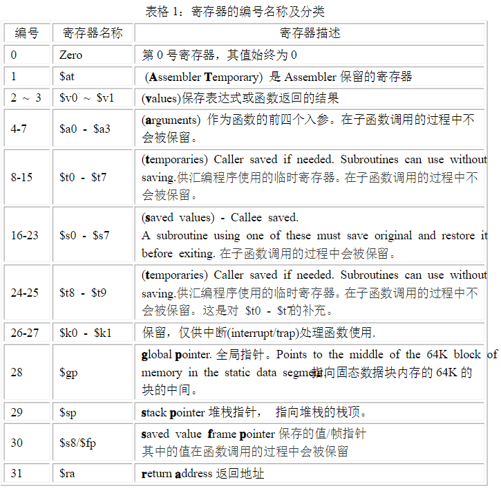
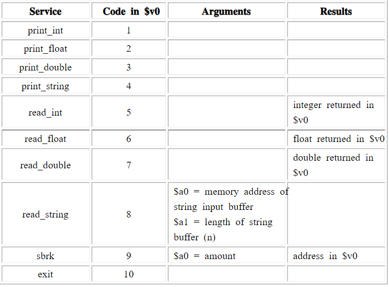

数据类型和方法：
数据类型：字节，byte占用8bit，halfword占用2byte=16bit，word占用4byte=32bit
一个字符需要一个Byte的空间
一个整数需要1个Word（4Byte）的空间
MIPS结构的每条指令长度都是32bit
寄存器：
- 有32个通用寄存器，用编号$0到$31来表示，也可以用寄存器名字来表示，例如$sp,$t1,$ra
- 有两个特殊的寄存器Lo、Hi，用来保存乘法/除法的运算结果，这两寄存器不能直接寻址，只能用特殊的置零：mfhi和mflo来aceess其中的内容（mfhi = move from Hi, mflo = more from Lo）
- 堆栈的增长方向是：从内存的高地址方向，向低地址方向。

汇编程序结构框架
数据声明：
以.data 开始，声明了在代码中使用的变量的名字。同时，也在主存RAM中创建了对应的空间。
程序代码：
以.text 开始，这部分包含了由指令构成的程序功能代码。代码以main: 函数开始。main的结束点应该调用exit system call
程序的注释：
使用#符号进行注释，每行以#引导的部分都会被视作注释
一个MIPS汇编程序框架：
1 | # Comment giving name of program and description of function |
编写MIPS汇编程序：
Content：
Part1： 数据的声明
Part2： 数据的装载和保存（Load/Store指令）
Part3： 寻址
Part4： 算数运算指令： Arithmetic Instructions
Part5： 程序控制指令： Control Instructions
Part6： 系统调用和I/O操作（SPIM仿真）
Part1： 数据的声明
格式：
1 | name: storage_type value(s) |
创建一个以name为变量名称，values通常为初始值，storage_type代表存储类型。
注意：变量名后要跟一个冒号
1 | # example |
Part2: 数据的装载和保存（Load/Store指令）
- 主存RAM的存取access只能用load/store指令来完成。
- 所有其他的指令都使用的是存储器作为操作数。
- load指令：
1 | lw register_destination, RAM_source |
- store 指令：
1 | sw register_source, RAM_destination |
example:1
2
3
4
5
6
7
8
9
10
11
12.data
var1: .word 23 # declare storage for var1; initial value is 23
.text
__start:
lw $t0, var1 # load contents of RAM location into register $t0;
# $t0 = var1
li $t1, 5 # $t1 = 5 ("load immediate")
sw $t1, var1 # store contents of register $t1 into RAM:
# var1 = $t1 done
done
Part3: 寻址
MIPS系统结构只能用load/store相关指令来实现寻址操作，包括三种寻址方式：
- 装载地址： load address，相当于直接寻址，把数据地址直接载入寄存器。
- 间接寻址： indirect addressing，间接寻址，把寄存器内容作为地址。
- 基线寻址/索引寻址： based or indexed addressing， 相对寻址， 利用补偿值(offset)寻址
- 直接寻址/装载地址：load address:
1
la $t0, var1
把var1在主存RAM中的地址拷贝到寄存器t0中，var1也可以是程序中定义的一个子程序标签的地址。
- 间接寻址： indirect addressing：
1
lw $t2, ($t0)
主存中有一个字的地址存在t0中，按这个地址找到那个字，把字拷贝到寄存器t2中。1
sw $t2, ($to)
把t2中的字存入t0中的地址指向的主存位置。
- 基线寻址/索引寻址： based or indexed addressing：
1
lw $t2, 4($t0)
把t0中地址+4所得的地址所对应的主存中的字载入寄存器t2中，4为包含在t0中的地址的偏移量。1
sw $t2, -12($t0) # offset can be negative
把t2中的内容存入t0中的地址-12所得的地址所对应的主存。
基线寻址在以下场合特别有用：
1、 数组： 从基址出发，通过使用偏移量，存取数组元素。
2、 堆栈： 利用从堆栈指针或者框架指针的偏移量来存取元素。
example：1
2
3
4
5
6
7
8
9
10
11
12
13
14
15
16.data
array1: .space 12 # declare 12 bytes of storage to hold array of 3 integers
.text
__start:
la $t0, array1 # load base address of array into register $t0
li $t1, 5 # $t1 = 5 ("load immediate")
sw $t1, ($t0) # first array element set to 5;
# indirect addressing
li $t1, 13 # $t1 = 13
sw $t1, 4($t0) # second array element set to 13
li $t1, -7 # $t1 = -7
sw $t1, 8($t0) # third array element set to -7
done
四位四位地走
存入一个字，占用4个字节，消耗4个内存号。且地址偏移量可正可负
Part5 算术运算指令： Arithmetic Instructions
- 算术运算指令地所有操作数都是寄存器，不能直接使用RAM地址或间接寻址。
- 操作数地大小都为Word（4-Byte）
1 | add $t0,$t1,$t2 # $t0 = $t1 + $t2; add as signed |
Part6: 程序控制指令： Control Instructions
- 分支指令（Branches）
条件分支的比较机制已经内建在指令中
1 | b target # unconditional branch to program label target |
跳转指令（Jumps）
1
2j target # unconditional jump to program label target
jr $t3 # jump to address contained in $t3 ("jump register")子程序调用指令
子程序调用指令的实质是跳转并链接（Jump and Link），它把当前程序计数器的值保留到$ra中，以备跳回）
跳到子程序：1
jal sub_label # "jump and link", preserve pc to $ra
sub_label为子程序的标签，如LOOP，SUB_ROUTINE
从子程序返回:1
jr $ra # "jump register" jump as the value of $ra
返回到$ra中储存的返回地址对应的位置，$ra中的返回地址由jal指令保存
注意，返回地址存放在$ra寄存器中，如果子程序调用了下一级程序，或者递归调用，此时需要将返回地址保存在堆栈中，因为没执行依次jal指令就会覆盖$ra中的返回地址。
Part6：系统调用和I/O操作（SPIM仿真）
系统调用是指调用操作系统的特定子程序
系统调用用来在仿真器的窗口中打印或者读入字符串string，并可显示程序是否结束
用syscall指令进行对系统子程序的调用
本操作首先支持$v0 and $a0-$a1中的相对值
调用以后的返回值（如果存在）会保存在$v0中。

e.g.1
2
3
4# 打印在$t2中的整数
li $v0, 1
move $a0, $t2
syscall
1 | # read integer value, store in RAM location with label int_value (presumably declared in data section) |
1 | # print out string |
1 | # to indicate end of program, use exit system call |
阶乘：
1 | .data |
冒泡排序：
1 | .data |
函数调用
1 | .text |
1 | ########################################################################### |